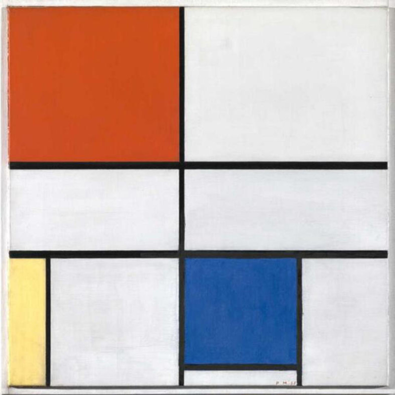

Revolutionary Abstract Art: Mondrian
Piet Mondrian was a Dutch painter and art theoretician who is regarded as one of the greatest artists of the 20th century. He is known for being one of the pioneers of 20th-century abstract art, as he changed his artistic direction from figurative painting to an increasingly abstract style, until he reached a point where his artistic vocabulary was reduced to simple geometric elements.
Let's recreate one of his most celebrated paintings using CSS Flexbox. How exciting is that?
This is "Composition C (No III) with red, yellow and blue", painted in 1935. It is an excellent example of Mondrian's deceptively simple Neoplasticisim.
